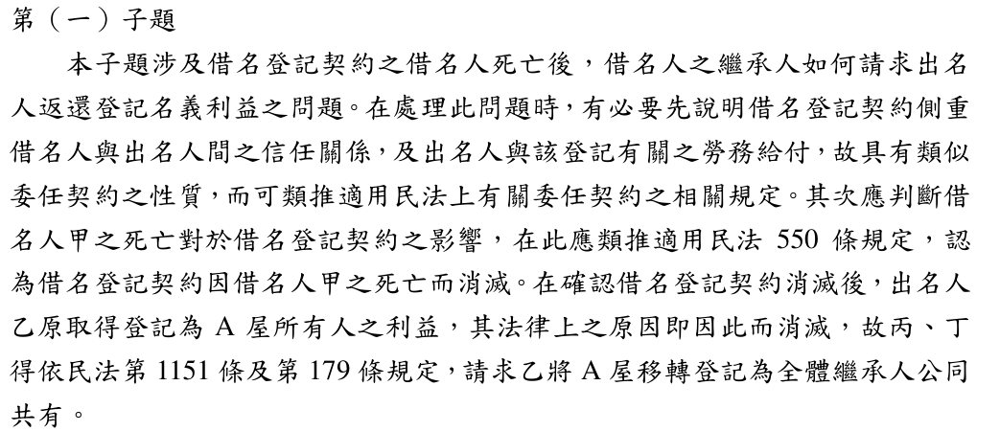
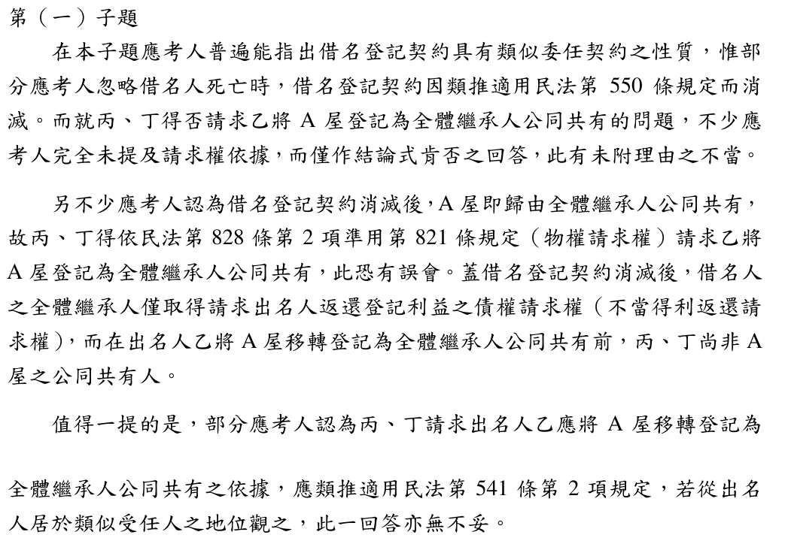

房子借兒子的名，爸爸過世後要改回大家共有嗎？
111年律師第二試｜民法與民事訴訟法（一）｜第一題第（一）小題（20分）
題目
這一題有四個小題。本頁只做第（一）小題，用得到的事實畫黃色底線。
- （一）丙、丁得否請求乙將A屋登記為乙、丙、丁三人公同共有？（20分）本頁只做這一題
- （二）丙單獨通知乙不得再繼續使用A屋，並請求乙遷出A屋，是否有理？（20分）
- （三）因X大樓住戶戊之過失引發火災，致B屋部分毀損。丙得否單獨向戊請求賠償按其應繼分計算之損害？（20分）
- （四）乙利用其為A屋所有權登記名義人之機會，提供A屋予不知乙僅係A屋出名人之庚設定最高限額新臺幣（下同）480萬元之抵押權，以擔保乙於設定時向庚實際借得之420萬元借款債務。嗣因乙未能清償前開債務，庚遂聲請法院拍賣A屋，並就拍定之價金受償390萬元，其餘30萬元仍未獲清償。之後，乙、丙、丁就甲之遺產完成分割協議，各取得三分之一。如丙、丁就乙前開處分A屋，得依侵權行為規定向乙請求賠償之權利已經時效完成，則丙、丁得否另為如下之請求？（40分）1.乙應給付丙、丁各160萬元 2.乙應給付丙、丁各140萬元 3.乙應給付丙、丁各130萬元
影片說明
影片依序示範：主播介紹、整題讀一遍並框出第（一）小題、四個人與A屋、學弟學姊說明三步順序、信任繩斷（第550條）、請求權票進遺產箱（第179條後段、第1151條）、類推第541條第2項、箱裡是請求權不是房子（不能用第821條）、三個易錯點，最後把擬答從頭看一遍。
人物與A屋
| 人 | 身分 | 本小題的角色 |
|---|---|---|
| 甲 | 父親，借名人，已死亡 | A屋實際上是甲的，借乙的名字登記 |
| 乙 | 甲之子，出名人，也是繼承人 | A屋登記在乙名下；被請求移轉登記的人 |
| 丙、丁 | 繼承人 | 請求把A屋改登記為三人公同共有 |
答題順序：三步
閱卷委員說，部分考生忽略第550條；不少考生只作結論、沒提請求權依據；也有不少考生以為契約消滅後A屋就自動歸全體繼承人公同共有。
先分清楚：請求權基礎與輔助規範
| 條文 | 在本題的角色 |
|---|---|
| 第179條後段 | 請求權基礎：乙保有登記名義的法律上原因已不存在，應返還 |
| 類推第541條第2項 | 另一個請求權基礎：出名人以自己名義為借名人取得之權利，應移轉（閱卷委員：亦無不妥） |
| 第550條 | 輔助：說明借名登記契約因甲死亡而消滅，才有「法律上原因不存在」 |
| 第1151條 | 輔助：說明這個返還請求權屬遺產，由全體繼承人公同共有，所以要移轉登記為三人公同共有 |
本題用到的條文
先看要件，再套本案事實。原文中畫底線的部分，就是本題用到的那一句。
民法第550條：委任關係因死亡消滅（第①步）
委任關係，因當事人一方死亡、破產或喪失行為能力而消滅。但契約另有訂定，或因委任事務之性質不能消滅者，不在此限。
| 要件 | 本案事實 | 結果 |
|---|---|---|
| 借名登記類似委任 | 重在信任關係，及出名人與登記有關之勞務給付（評分要點） | ✓ 類推 |
| 當事人一方死亡 | 甲死亡 | ✓ |
| 但書例外 | 題示未見契約另有訂定或事務性質不能消滅 | 不適用 |
民法第179條：不當得利（第②步，請求權基礎）
無法律上之原因而受利益，致他人受損害者，應返還其利益。雖有法律上之原因，而其後已不存在者，亦同。
本題乙原本因借名登記契約取得登記名義；契約消滅後，法律上原因「其後已不存在」，適用後段。
民法第541條第2項：受任人取得權利的移轉（第②步，另一條路）
受任人以自己之名義，為委任人取得之權利，應移轉於委任人。
本題閱卷委員：「若從出名人居於類似受任人之地位觀之，此一回答亦無不妥。」
民法第1151條：遺產公同共有（輔助）
繼承人有數人時，在分割遺產前，各繼承人對於遺產全部為公同共有。
本題返還請求權屬甲的遺產，由乙、丙、丁公同共有；所以請求的內容是移轉登記為三人公同共有。
民法第828條第2項、第821條：為什麼不能用（第③步）
第828條第2項：第八百二十條、第八百二十一條及第八百二十六條之一規定，於公同共有準用之。
第821條：各共有人對於第三人，得就共有物之全部為本於所有權之請求。但回復共有物之請求，僅得為共有人全體之利益為之。
本題這是「共有人」行使所有權的物上請求權。移轉登記前，A屋仍登記於乙名下，繼承人只有債權請求權，尚非A屋公同共有人，不能用。
以上條文均依全國法規資料庫現行條文核對（2026-11-17、11-18）。
答題地圖
考選部評分要點與閱卷委員的話

閱卷委員的話：
- 考生普遍能指出借名登記類似委任，但部分考生忽略第550條，沒說契約因甲死亡而消滅。
- 不少考生完全未提請求權依據，只作結論式回答，有未附理由之不當。
- 不少考生認為契約消滅後A屋即歸全體繼承人公同共有，而依第828條第2項準用第821條請求，此恐有誤會：繼承人只取得返還登記利益的債權請求權，移轉登記前尚非A屋公同共有人。
- 認為應類推適用第541條第2項者，從出名人居於類似受任人之地位觀之，亦無不妥。

來源：考選部〈111年司法官、律師考試第二試法律專業科目評分要點與閱卷委員的話〉民法與民事訴訟法（一）第1、3、4頁，已轉成圖片逐頁核對。
擬答
丙、丁之請求有理由。
一、借名登記契約因甲死亡而消滅
（一）借名登記契約側重借名人與出名人間之信任關係，及出名人與該登記有關之勞務給付，性質類似委任，得類推適用委任之規定。
（二）類推適用第550條，委任關係因當事人一方死亡而消滅；題示未見契約另有訂定或事務性質不能消滅之情形，甲死亡，借名登記契約即消滅。
二、丙、丁得請求乙將A屋移轉登記為全體繼承人公同共有
（一）契約消滅後，乙受有A屋登記名義之利益，其法律上原因已不存在，應依第179條後段返還。此請求權依第1151條為全體繼承人公同共有，丙、丁得據以請求移轉登記。
（二）出名人居於類似受任人之地位，其以自己名義為借名人取得之權利，亦得類推適用第541條第2項請求移轉。
（三）惟移轉登記前，A屋仍登記於乙名下，全體繼承人僅有債權請求權，尚非A屋之公同共有人，不得逕依第828條第2項準用第821條，以物上請求權為據。
三、結論
丙、丁得依第179條後段，或類推適用第541條第2項，請求乙將A屋移轉登記為乙、丙、丁三人公同共有（第1151條）。
擬答443字（含標題、標點與數字，不含空白，以程式計算）。20分題目參考上限429字（120分鐘×20/150＝16分鐘，扣讀題3分鐘，13分鐘×每分鐘約33字）；略超幾個字可接受。
互動：換一個情形，結論會怎樣？
本題的關鍵是「契約消滅」與「移轉登記前還不是共有人」。先自己想想，再點。
後兩個分頁是本頁為了對照第550條但書與第821條所做的假設與推論，不是考選部評分要點的內容。本頁推論
學說補充
尚未加入指定學說文獻。借名登記類推委任為評分要點所採；部分繼承人能否單獨行使公同共有債權，本題評分要點未處理（第（三）小題才討論），本頁不另下結論。
預想易錯點
①～③依閱卷委員的話整理。
| 可能的錯誤 | 應該怎麼寫 |
|---|---|
| ① 忘了第550條 | 先說明借名登記類推委任，甲死亡契約消滅。 |
| ② 只寫結論、沒有請求權依據 | 寫出第179條後段（或類推第541條第2項）。 |
| ③ 以為契約消滅，A屋就自動變成大家共有 | 移轉登記前只有債權請求權，不能依第828條第2項準用第821條。 |
| 把第1151條寫成請求權基礎 | 第1151條說明請求權屬全體繼承人公同共有；請求依據是第179條後段。 |
延伸思考
參考資料
歡迎指正
相關連結
民法講義總覽 下一題：111年第一題（二）使用借貸與終止權 112年第一題（一）：公用地役關係與妨害除去 113年第二題（三）：債權雙重讓與 GitHub 原始檔